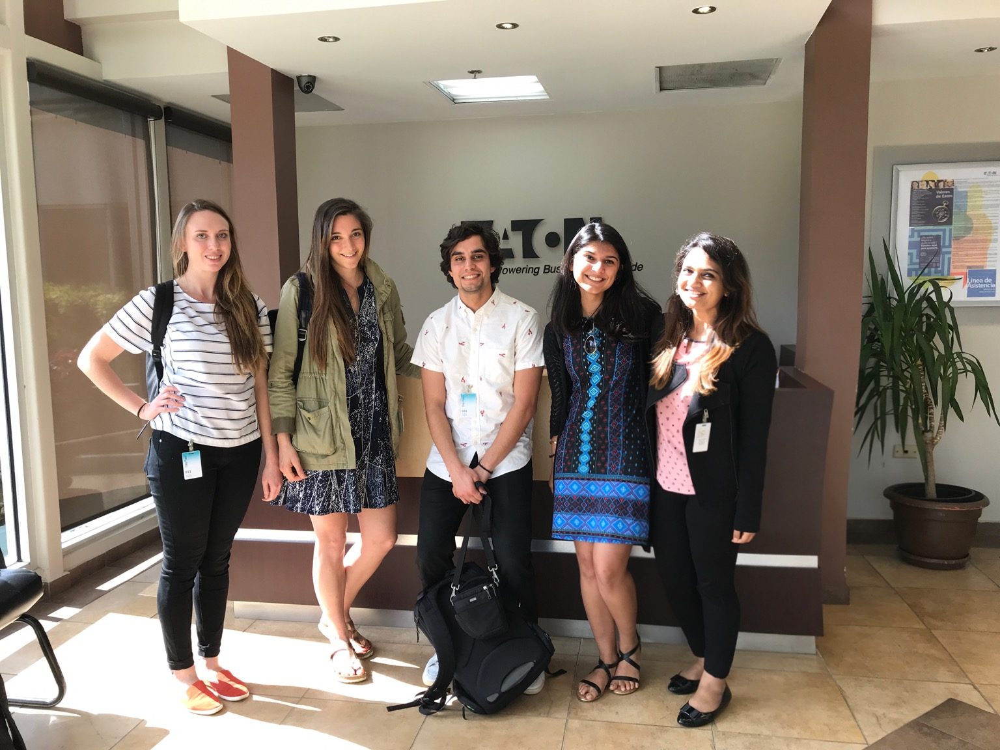

Team Eaton
(Also check us out on Medium)

About Us
(from left to right)
Morgan Broacha
UX Strategist
I am originally from Green River, Wyoming (population 1,100). I graduated from University of Pittsburgh
in 2012 with a BA in Chinese, Economics, and Politics-Philosophy. Naturally, I have spent my entire
career in software. I first worked as Quality Assurance for a healthcare software company in Madison,
WI, where I ultimately ran the company’s UX Research Lab. Before coming to CMU I was a Business Analyst
for a CRM software company. I am personally passionate about women in tech, and in my free time I
ski, bike tour, camp, go to music festivals, and scuba dive. I am especially excited to work with
Eaton in the wake of tragedies like Hurricane Maria to use design as a tool for recovery and growth.
Emily Osborne
Research Lead
I’m a native Pittsburgher who grew up between Boston, Baltimore, and Western PA. I graduated from Dickinson
College in 2012 with a BA in International Studies and Italian. Following graduation, I taught English
in South Korea, worked for Amnesty International and Greenpeace in New Zealand, and returned home
to Pittsburgh to work for a local nonprofit. I then transitioned into the tech world, originally
in a business development capacity, before moving into UX Research three years ago. I freelanced
for local startups, as well as worked as a Strategic Design Consultant for design for social innovation
firm, Fit Associates. I’m passionate about design for social impact, so I have been thrilled to be
part of such a mission-driven team throughout this project.
Cameron Erdogan
Technical Lead
I was born and raised in central New Jersey, but I’ve spent enough of my life in New York City where
I officially tell people I’m from there. I did my undergrad in Computer Science at Columbia, and
afterwards worked as an engineer at Tinybop (a children’s app startup) and at Citi Bike (a bike share
system). When I’m not coding, I make music and yell at sports. I am optimistic about the future of
technology, with one caveat: we’ll only get to an ideal future if technologists and designers are
conscious about their design trajectory. Designing for disaster recovery is a fertile area that shows
the power of technology for good.
Aishwarya Dwivedi
Product Manager
I am a Telecommunication Engineer from Bangalore, India who accidentally slipped into the world of design
through my final engineering project in the field of Virtual Reality. I graduated in 2016 and since
then have worked as a UX Consultant and an Associate Product Manager in a service based company looking
at the end to end development of software products in the financial sector. Apart from this, I always
want to give back to the society and this project has definitely allowed me to do so. This project
allowed me to use my skills as a Product Manager where I could align the project goals with Eaton’s
long term goals. It also challenged me to explore the partnerships that would be beneficial to create
products within a service environment. Overall, I could not have been on a better project.
Deepika Mittal
Design Lead
I have lived all my life in India until I came to US for my masters. I graduated from Indian Institute
of Technology Guwahati in 2016 with a Bachelor in Design. After my graduation, I worked for a year
as the User Experience Design Lead in CarDekho, India’s largest car search portal. In my free time,
you will find me playing with Alexa or Google Home. User-centered design approach is always at the
forefront of everything that I do. I am excited about this project because I find this space challenging,
especially the part “securely serve power to communities without essential infrastructure needs dependent
on power”. Looking forward to come up with something novel.